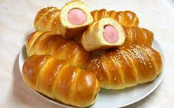

Смотри и наслаждайся!
Выпечка — общее название для хлебобулочных изделий и кондитерских изделий, изготавливаемых методом выпекания, а также сам этот процесс. Мелкоштучные хлебобулочные изделия включают в себя выпечку преимущественно из хлебного теста весом до 250 граммов. Это булочки, рогалики, круассаны и т.д.
 купитьчто смотришь, покупай и кайфуй